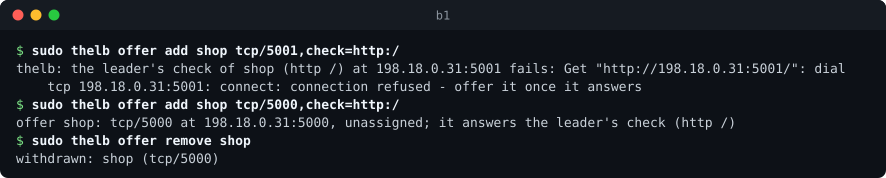
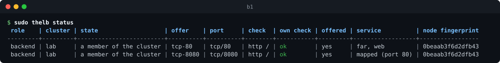
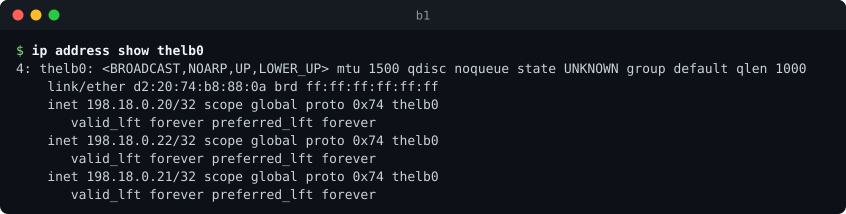

Guides
Backends and offers
A backend runs your applications and offers them to the cluster. It never picks a service itself - a director decides.
Start a backend#
sudo thelb backend --join 10.0.0.10:7443 --secret-file /etc/thelb/backend.secret \
--offer shop=tcp/8080,check=http:/healthz --offer dns=udp/53| Flag | Meaning |
|---|---|
--join | the control VIP (an address or a name) and the control port |
--secret-file | the backend secret, copied from a director |
--offer | an application to offer; give it as many times as you like, or not at all |
--name | this node's name; the hostname by default |
--interface | the network interface to use, if theLB cannot tell |
--metrics | serve metrics on this address |
The first time, a director must approve the backend. After that it rejoins by itself when it restarts.
Offers#
An offer is one of your applications: a name you choose, a protocol, a port and a health check.
shop=tcp/8080,check=http:/healthz
^ ^ ^ ^
name | port the check: an HTTP GET for /healthz
protocol: tcp, udp or sctp- The name is letters, digits,
.,-and_, up to 63. Withoutname=, theLB names it for you:tcp-8080. - The check is one of:
check=tcp(can it connect? the default for TCP),check=http:/path(a GET; any 2xx or 3xx answer passes), orcheck=none(the default for UDP and SCTP). - Each name, and each protocol and port, can be offered once per backend.
You can offer an application while the backend runs - for example, once the application is up:
sudo thelb offer add shop tcp/8080,check=http:/healthz
sudo thelb offer remove shop # withdraw it: its assignments endBefore the cluster records an offer, the leader runs its check against the application. If the check fails, theLB tells you why:

As text
$ sudo thelb offer add shop tcp/5001,check=http:/
thelb: the leader's check of shop (http /) at 198.18.0.31:5001 fails: Get "http://198.18.0.31:5001/": dial tcp 198.18.0.31:5001: connect: connection refused - offer it once it answers
$ sudo thelb offer add shop tcp/5000,check=http:/
offer shop: tcp/5000 at 198.18.0.31:5000, unassigned; it answers the leader's check (http /)
$ sudo thelb offer remove shop
withdrawn: shop (tcp/5000)More about offers:
- An offer starts unassigned. A director assigns it to a service - see Pools, services and assignments.
- An
--offerflag is offered once the backend's own check of it passes. So you can start the backend before your application. - The cluster remembers offers. A backend that restarts takes back what the cluster holds for it, with or without the flags.
thelb offer addwith an existing name and a new port replaces it. Its assignments move to the new port.
Your application must listen on all addresses
The VIP is added to a special interface on the backend, thelb0, not to eth0. So your application must listen on all addresses (0.0.0.0 or ::), or on the VIP itself.
Health: when a backend gets traffic#
A backend gets traffic only while all of these are true:
- its heartbeat reached the leader in the last 10 seconds (it sends one every 2 seconds);
- its own check of the application passes;
- it holds the service's VIP on
thelb0; - the directors' check of the application passes.
If any of them fails, the backend's weight becomes 0: no new connections go to it, and open ones finish. It stays assigned, and gets traffic back by itself when the checks pass again.
Checks run every 2 seconds, with a 1-second timeout. A backend is healthy after 2 passes in a row, and unhealthy after 3 failures in a row - about 6 seconds.
The directors share the work of checking. The leader gives each application to one director, and the same one each time. If that director stops reporting, the leader does the check itself.
A backend's own view#
thelb status on a backend shows only that backend: its offers, their checks, and what they are assigned to.

As text
$ sudo thelb status
role | cluster | state | offer | port | check | own check | offered | service | node fingerprint
---------+---------+-------------------------+----------+----------+--------+-----------+---------+------------------+------------------
backend | lab | a member of the cluster | tcp-80 | tcp/80 | http / | ok | yes | far, web | 13fb773a2f1602be
backend | lab | a member of the cluster | tcp-8080 | tcp/8080 | http / | ok | yes | mapped (port 80) | 13fb773a2f1602beWhat a backend changes on its machine#
- It creates
thelb0, a dummy interface that does not answer ARP, and puts its services' VIPs on it. - It sets
net.ipv4.conf.all.arp_ignore=1andarp_announce=2(unless they are already stricter), so the machine never answers ARP for a VIP. - For port mapping or tunnelled services, it adds an nftables table,
inet thelb, and for tunnels an interface,thelbt0. See Direct routing and tunnels.

thelb0 on a backend, with the VIPs of the services it serves.As text
$ ip address show thelb0
4: thelb0: <BROADCAST,NOARP,UP,LOWER_UP> mtu 1500 qdisc noqueue state UNKNOWN group default qlen 1000
link/ether d2:20:74:b8:88:0a brd ff:ff:ff:ff:ff:ff
inet 198.18.0.20/32 scope global proto 0x74 thelb0
valid_lft forever preferred_lft forever
inet 198.18.0.22/32 scope global proto 0x74 thelb0
valid_lft forever preferred_lft forever
inet 198.18.0.21/32 scope global proto 0x74 thelb0
valid_lft forever preferred_lft foreverEverything is removed, and the settings put back, when it stops. See What theLB changes for the full list.
Stopping a backend#
Stop it with SIGTERM, systemctl stop, Ctrl+C, or by closing its terminal. It asks the leader to stop sending it traffic, keeps its VIPs a moment longer so that connections already on their way are not lost, then removes everything.
If a director removes a backend (thelb admin remove), the backend stops. If it starts again, it must be approved again.